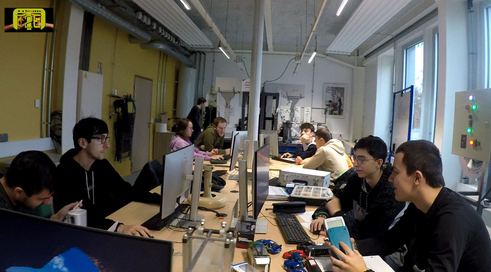
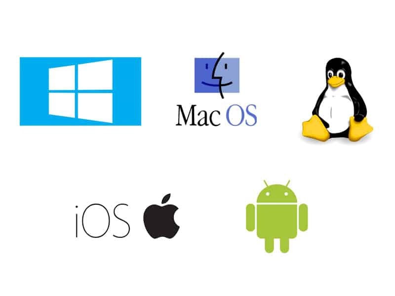
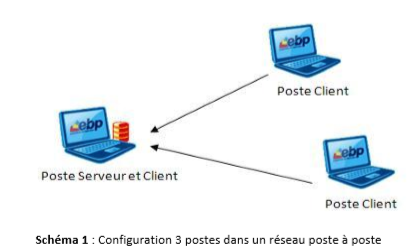
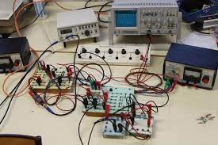

j'ai appris à gérer efficacement les ressources informatiques pour permettre aux utilisateurs d'accéder rapidement et facilement aux données et aux applications dont ils ont besoin. J'ai également appris à configurer des équipements réseau tels que des routeurs,
des commutateurs et des pare-feux pour garantir une sécurité et une performance optimales du réseau.
J'ai également appris à surveiller les performances du réseau en utilisant des outils de surveillance et de dépannage,
et à résoudre rapidement les problèmes de connectivité ou de performance. j'ai développé une compréhension approfondie des protocoles et des technologies réseau tels que TCP/IP, DNS, DHCP et VPN, qui sont essentiels pour configurer et gérer un réseau informatique moderne.
j'ai acquis une solide compréhension des processus de gestion des utilisateurs et de la sécurité des données. J'ai appris à créer et à gérer des comptes utilisateur, à attribuer des autorisations et à contrôler l'accès aux données en fonction des niveaux de sécurité appropriés. J'ai également appris à surveiller l'activité des utilisateurs sur le réseau, à gérer les sauvegardes et les restaurations de données et à mettre en place des politiques de sécurité efficaces pour protéger le réseau contre les menaces potentielles.
j'ai appris à gérer efficacement les ressources informatiques pour permettre aux utilisateurs d'accéder rapidement et facilement aux données et aux applications dont ils ont besoin. J'ai également appris à configurer des équipements réseau tels que des routeurs,
des commutateurs et des pare-feux pour garantir une sécurité et une performance optimales du réseau.
J'ai également appris à surveiller les performances du réseau en utilisant des outils de surveillance et de dépannage,
et à résoudre rapidement les problèmes de connectivité ou de performance. j'ai développé une compréhension approfondie des protocoles et des technologies réseau tels que TCP/IP, DNS, DHCP et VPN, qui sont essentiels pour configurer et gérer un réseau informatique moderne.
j'ai acquis une solide compréhension des processus de gestion des utilisateurs et de la sécurité des données. J'ai appris à créer et à gérer des comptes utilisateur, à attribuer des autorisations et à contrôler l'accès aux données en fonction des niveaux de sécurité appropriés. J'ai également appris à surveiller l'activité des utilisateurs sur le réseau, à gérer les sauvegardes et les restaurations de données et à mettre en place des politiques de sécurité efficaces pour protéger le réseau contre les menaces potentielles.
En somme, les TP et les Projets ont joué un rôle crucial dans l'acquisition de mes compétences en administration et configuration de réseau informatique. Ils m'ont permis de mettre en pratique les concepts théoriques, de travailler en équipe et de développer des compétences en documentation et communication.
 j'ai appris à maîtriser les rôles et les principes fondamentaux des systèmes d'exploitation tels que Linux et Windows, ainsi que leurs commandes terminales respectives. J'ai compris que le système d'exploitation est un logiciel qui gère les ressources matérielles et logicielles d'un ordinateur, permettant ainsi aux autres programmes de fonctionner. J'ai également appris à naviguer dans les interfaces de ligne de commande de Linux et de Windows, en utilisant des commandes telles que ls, cd et pwd pour accéder aux fichiers et répertoires, et à utiliser des outils tels que grep et find pour rechercher des fichiers spécifiques. Enfin, j'ai appris à utiliser des commandes de base pour gérer les processus, les utilisateurs et les droits d'accès, et j'ai compris l'importance de la sécurité et de la gestion des données dans les systèmes d'exploitation. Dans l'ensemble, cette compétence m'a permis de mieux comprendre les systèmes d'exploitation et leurs fonctionnalités, et de gagner en confiance dans l'utilisation des interfaces de ligne de commande. En fin de compte, les TP et projets pratiques sont un élément clé de tout programme de formation ou de certification en administration système, car ils permettent aux apprenants de mettre en pratique les connaissances acquises et de développer des compétences pratiques qui peuvent être appliquées dans un contexte professionnel.
 j'ai acquis les connaissances nécessaires pour installer et configurer un système d'exploitation sur un poste client. J'ai appris les différentes étapes du processus d'installation, de la préparation du support d'installation à la configuration du système après l'installation. J'ai également appris à sélectionner la bonne version du système d'exploitation en fonction des besoins du client, à partitionner le disque dur, à installer les pilotes nécessaires pour le matériel et à configurer les paramètres de réseau. J'ai compris l'importance de la configuration du BIOS et de la vérification de la compatibilité matérielle pour une installation réussie. Dans l'ensemble, j'ai acquis une compréhension approfondie du processus d'installation d'un poste client et de la configuration du système d'exploitation pour répondre aux besoins du client. Cette compétence est essentielle pour toute personne travaillant dans le domaine de l'administration système et peut être appliquée dans une grande variété de contextes professionnels, y compris les entreprises, les écoles et les organisations gouvernementales.
 j'ai acquis les compétences nécessaires pour comprendre comment fonctionnent les signaux électroniques et comment les mesurer et les analyser avec précision. J'ai appris à utiliser des outils de mesure tels que des oscilloscopes, des analyseurs de spectre, des multimètres et des générateurs de signaux pour effectuer des mesures précises et déterminer les caractéristiques d'un signal. J'ai compris les concepts clés liés aux signaux, tels que la fréquence, l'amplitude, la phase et la forme d'onde, et j'ai appris à interpréter les résultats des mesures pour comprendre les caractéristiques du signal. J'ai également appris à analyser les signaux pour déterminer les problèmes éventuels et les anomalies, et à résoudre les problèmes en modifiant les paramètres du signal ou en remplaçant les composants défectueux.
 j'ai acquis les compétences nécessaires pour comprendre comment les données sont transmises sur différents supports, tels que les câbles, les fibres optiques et les ondes radio.
J'ai appris les caractéristiques physiques de ces supports de transmission, tels que la bande passante, l'atténuation, la distorsion, la capacité et la sensibilité aux interférences, et j'ai compris comment ces caractéristiques influent sur la qualité de la transmission des données.
j'ai acquis les compétences nécessaires pour comprendre comment les données sont transmises sur différents supports, tels que les câbles, les fibres optiques et les ondes radio.
J'ai appris les caractéristiques physiques de ces supports de transmission, tels que la bande passante, l'atténuation, la distorsion, la capacité et la sensibilité aux interférences, et j'ai compris comment ces caractéristiques influent sur la qualité de la transmission des données.
En résumé, les travaux pratiques de fibre optique, de physique des télécom et de systèmes de transmission sont essentiels pour les étudiants qui se destinent à des carrières dans les domaines des télécommunications, des réseaux informatiques et de la transmission de données. Ils permettent de mettre en pratique les connaissances théoriques et de développer des compétences pratiques pour la conception, la configuration et la maintenance des équipements de transmission et des réseaux de télécommunications.
 Au cours de ma formation, j'ai eu l'occasion de développer mes compétences en création de sites web en utilisant différents langages de programmation tels que JavaScript, SQL, HTML et CSS. J'ai appris à concevoir et à développer des sites web pour différents objectifs, tels que des sites E-portfolio, E-commerce et autres.
J'ai commencé par apprendre les bases de la conception de sites web, y compris la mise en page, le design et la structuration des pages. J'ai ensuite appris à utiliser des langages de programmation pour ajouter des fonctionnalités interactives à mes sites web, telles que des formulaires, des animations et des effets visuels. J'ai également appris à intégrer des bases de données SQL pour stocker et gérer les informations relatives aux utilisateurs et aux produits pour les sites de E-commerce.
J'ai été en mesure d'utiliser mes connaissances en programmation pour personnaliser et adapter mes sites web aux besoins de mes clients, en créant des fonctionnalités et des designs uniques. J'ai également appris à déployer mes sites web en utilisant des services d'hébergement et à optimiser leur performance pour assurer une expérience utilisateur optimale.
En travaillant sur des projets de création de sites web, j'ai acquis une expérience pratique en matière de développement web et j'ai appris à résoudre des problèmes de programmation et à trouver des solutions créatives pour répondre aux besoins de mes clients. Je suis maintenant capable de créer des sites web professionnels et fonctionnels en utilisant différentes technologies de programmation, et je suis prêt à poursuivre ma carrière dans le développement web et la conception de sites web.
Au cours de ma formation, j'ai eu l'occasion de développer mes compétences en création de sites web en utilisant différents langages de programmation tels que JavaScript, SQL, HTML et CSS. J'ai appris à concevoir et à développer des sites web pour différents objectifs, tels que des sites E-portfolio, E-commerce et autres.
J'ai commencé par apprendre les bases de la conception de sites web, y compris la mise en page, le design et la structuration des pages. J'ai ensuite appris à utiliser des langages de programmation pour ajouter des fonctionnalités interactives à mes sites web, telles que des formulaires, des animations et des effets visuels. J'ai également appris à intégrer des bases de données SQL pour stocker et gérer les informations relatives aux utilisateurs et aux produits pour les sites de E-commerce.
J'ai été en mesure d'utiliser mes connaissances en programmation pour personnaliser et adapter mes sites web aux besoins de mes clients, en créant des fonctionnalités et des designs uniques. J'ai également appris à déployer mes sites web en utilisant des services d'hébergement et à optimiser leur performance pour assurer une expérience utilisateur optimale.
En travaillant sur des projets de création de sites web, j'ai acquis une expérience pratique en matière de développement web et j'ai appris à résoudre des problèmes de programmation et à trouver des solutions créatives pour répondre aux besoins de mes clients. Je suis maintenant capable de créer des sites web professionnels et fonctionnels en utilisant différentes technologies de programmation, et je suis prêt à poursuivre ma carrière dans le développement web et la conception de sites web.
La compétence que j'ai acquise ,grâce aux TP et projet de ma formation,est le pentesting, une méthode pour évaluer la sécurité d'un système informatique en cherchant des vulnérabilités et en exploitant celles qui sont découvertes. J'utilise des outils tels que Nessus et Metasploit pour effectuer des tests de pénétration, en simulant des attaques informatiques afin de découvrir les failles de sécurité et de les corriger avant que des pirates ne les exploitent. Grâce à cette compétence, je suis capable de protéger les systèmes informatiques contre les menaces de plus en plus sophistiquées auxquelles ils sont confrontés.

Je suis devenu compétent en crackage de mot de passe, une technique de sécurité informatique qui implique de tester la robustesse des mots de passe en les décryptant. J'utilise des outils tels que John the Ripper et Hashcat pour décrypter des mots de passe en utilisant des attaques de force brute ou des dictionnaires de mots courants. Cette compétence est utile pour les professionnels de la sécurité informatique, car elle leur permet de tester la sécurité des mots de passe utilisés par les employés ou les utilisateurs, afin d'identifier les mots de passe faibles et de recommander des pratiques de sécurité renforcées. Cette compétence peut également être utilisée pour récupérer des mots de passe oubliés ou perdus, bien qu'il soit important de souligner qu'il est éthiquement et légalement incorrect d'utiliser cette technique pour accéder à des comptes sans autorisation.
Cela consiste à étudier les types d'attaques auxquelles les systèmes informatiques sont vulnérables et à recommander des mesures de sécurité pour les prévenir. En tant que professionnel de la sécurité informatique, j'ai appris à reconnaître les différentes méthodes d'attaques, telles que le phishing, le spoofing et le ransomware, et j'ai acquis des connaissances pour prévenir et résoudre les incidents de sécurité. En partageant ces connaissances avec les utilisateurs, je suis en mesure de sensibiliser les utilisateurs à l'importance de l'hygiène informatique, notamment en matière de protection des données personnelles et de confidentialité des informations. Cette compétence est essentielle dans un environnement informatique de plus en plus complexe, où les menaces de sécurité sont en constante évolution et où les utilisateurs sont souvent la première ligne de défense contre les cyberattaques.
Scrum est une approche de gestion de projet agile qui est très populaire dans le domaine du développement de logiciels. J'ai appris à planifier, organiser et superviser des projets en utilisant des techniques de gestion de projet Scrum, telles que la création de sprints, la tenue de réunions quotidiennes, l'établissement de tableaux de bord et la gestion des backlogs. La gestion de projet Scrum implique également une forte collaboration avec les membres de l'équipe, ce qui nécessite une excellente communication et une capacité à résoudre rapidement les problèmes. J'ai également appris à gérer les risques et les changements de manière efficace tout en restant flexible pour répondre aux besoins changeants des projets. La gestion de projet Scrum est une compétence importante dans un environnement de travail de plus en plus dynamique et axé sur l'agilité, où la capacité à gérer efficacement les projets est essentielle pour la réussite de l'entreprise. En ayant acquis cette compétence, je suis en mesure de mener des projets avec succès en utilisant une approche de gestion de projet Scrum éprouvée et reconnue dans le monde professionnel.
La gestion de crises est une compétence essentielle pour toute entreprise qui veut être capable de faire face à des situations difficiles et imprévues. Grâce aux séminaires auxquellesj'ai assisté, j'ai appris à anticiper et à répondre rapidement aux situations critiques qui peuvent menacer la réputation, les opérations ou la sécurité d'une entreprise. La gestion de crises implique la mise en place de plans d'urgence, la coordination des équipes, la communication avec les parties prenantes et la mise en place de mesures de récupération. Il est également important de maintenir une attitude calme et de prendre des décisions rationnelles dans des situations de crise. J'ai acquis des compétences en résolution de problèmes, en analyse des risques et en communication pour gérer efficacement les crises dans une entreprise. La gestion de crises est une compétence importante pour tout professionnel de la gestion d'entreprise, car elle peut aider à minimiser les impacts négatifs des événements imprévus et à maintenir la continuité des opérations. En ayant acquis cette compétence, je suis en mesure de gérer efficacement les crises dans une entreprise, ce qui peut aider à renforcer la confiance des parties prenantes et à assurer la réussite à long terme de l'entreprise.
j'ai appris à communiquer efficacement avec des personnes de différentes cultures et avec des compétences linguistiques variées. J'ai acquis des compétences en traduction, en interprétation et en communication écrite pour communiquer clairement et efficacement avec des partenaires internationaux. La communication est essentielle pour tout professionnel qui veut réussir dans un environnement de travail de plus en plus mondialisé.